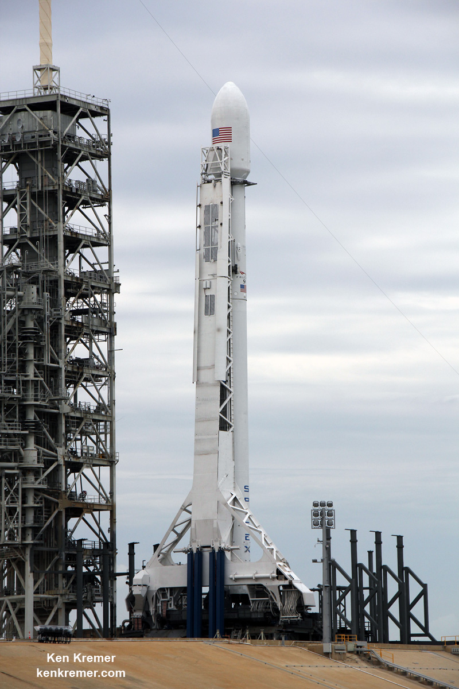
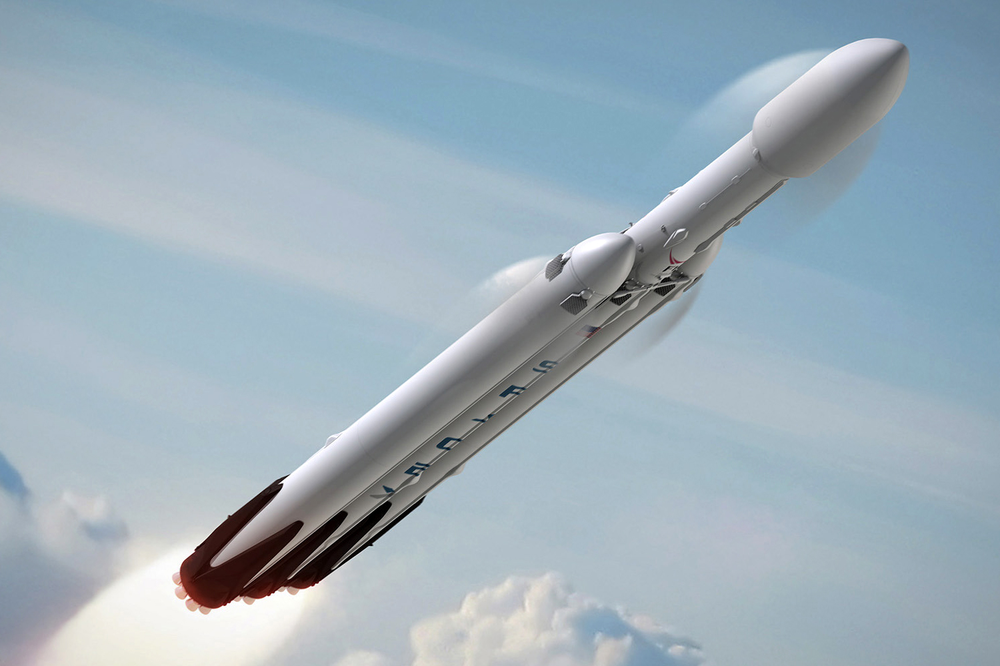

Falcon 1 was a small rocket capable of placing several hundred kilograms into low Earth orbit. It functioned as an early test-bed for developing concepts and components for the larger Falcon 9. Falcon 1 attempted five flights between 2006 and 2009. With Falcon I, when Musk announced his plans for it before a subcommittee in the Senate in 2004, he discussed that Falcon I would be the 'worlds only semi-reusable orbital rocket' apart from the space shuttle. On September 28, 2008, on its fourth attempt, the Falcon 1 successfully reached orbit, becoming the first privately funded, liquid-fueled rocket to do so.
Falcon 9 is an EELV-class medium-lift vehicle capable of delivering up to 22,800 kilograms (50,265 lb) to orbit, and is intended to compete with the Delta IV and the Atlas V rockets, as well as other launch providers around the world. It has nine Merlin engines in its first stage. The Falcon 9 v1.0 rocket successfully reached orbit on its first attempt on June 4, 2010. Its third flight, COTS Demo Flight 2, launched on May 22, 2012, and was the first commercial spacecraft to reach and dock with the International Space Station. The vehicle was upgraded to Falcon 9 v1.1 in 2013 and again in 2015 to the current Falcon 9 Full Thrust version. As of February 2018, Falcon 9 vehicles have flown 49 successful missions with one failure, the CRS-7 mission. An additional vehicle was destroyed during a routine test several days prior to a scheduled launch in 2016.
In 2011, SpaceX began development of the Falcon Heavy, a heavy-lift rocket configured using a cluster of three Falcon 9 first stage cores with a total 27 Merlin 1D engines and propellant crossfeed. The Falcon Heavy successfully flew on its inaugural mission on February 6, 2018 with a payload consisting of Musk's personal Tesla Roadster into heliocentric orbit. The first stage would be capable of lifting 63,800 kilograms (140,660 lb) to LEO with the 27 Merlin 1D engines producing 22,819 kN of thrust at sea level, and 24,681 kN in space. At the time of its first launch, SpaceX described their Falcon Heavy as "the world's most powerful rocket in operation".